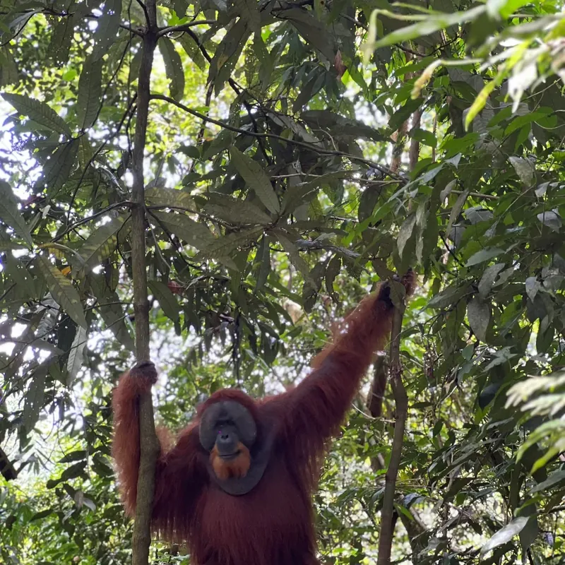

The Jungle & National Park
The rainforest of Gunung Leuser National Park around Bukit Lawang

Bukit Lawang lies right at the edge of Gunung Leuser National Park, one of the largest and most important rainforests in Southeast Asia. When you trek with Jos, you walk through this protected forest, along rivers, over hills and under giant rainforest trees.
About the national park
Gunung Leuser National Park was founded in 1980 and covers more than one million hectares in the provinces of North Sumatra and Aceh. It is named after Mount Leuser, one of the highest mountains in the region, and stretches from lowland rainforest up to high mountain forest.
Together with two other national parks on Sumatra, it forms the UNESCO World Heritage Site Tropical Rainforest Heritage of Sumatra. The park is the heart of the wider Leuser Ecosystem, the last place on Earth where orangutans, tigers, elephants and rhinos still live side by side.
Bukit Lawang has a special place in the park's history: in 1973 a rehabilitation centre for orangutans was founded here, to return orangutans rescued from captivity to the wild. Many of the orangutans living around Bukit Lawang today are their descendants. Read more about them on the Orangutans & Wildlife page.
Why the forest needs protection
The rainforest of Sumatra is under pressure from illegal logging, poaching, roads and the spread of plantations, for example for palm oil. UNESCO has listed the Tropical Rainforest Heritage of Sumatra as "in danger" since 2011.
Responsible tourism helps: it gives local people a good income from a living forest, and a reason to protect it.
Controlled access: only with a licensed guide
To protect the forest and its animals, the national park can only be entered with a permit and together with a licensed guide. You cannot simply walk into the jungle on your own. This keeps the number of visitors under control and makes sure that every group is led by someone who knows the forest and its rules.
On all tours with Jos, the park permit is already included in the price. There are no extra costs.
Rules in the jungle
Your guide will explain everything on the trek. The most important rules are:
- Keep a distance of at least 10 meters from orangutans and other wild animals.
- Never feed or touch the animals. They can become dependent on humans and catch our diseases.
- If you have a cold, the flu or another illness, tell your guide. Orangutans can catch human diseases easily.
- Stay quiet near animals and do not use the camera flash.
- Take all your trash back out of the jungle.
- Do not take plants, animals or anything else out of the forest.
- Always stay with your group and follow your guide's instructions.
How to recognize a licensed guide
Licensed guides in Bukit Lawang are members of the Indonesian tour guide association HPI (Himpunan Pramuwisata Indonesia). To get their license, guides go through training about the jungle and its animals and have to pass an exam.
Every licensed guide has an official guide ID card. Don't be shy: it is completely normal to ask your guide to show it to you before you book.
Jos is a licensed HPI guide and is happy to show you his card.
Fair, standard prices
Trekking prices in Bukit Lawang are set by the guide association, and licensed guides follow them. The standard prices make sure that everyone involved, from guides to porters and cooks, earns a fair income, and that you pay the same fair price wherever you book. The prices on this website follow these standard rates. See all tours and prices.
A few simple tips so you can book with a good feeling:
- Be careful with offers that are much cheaper than the standard prices. They often mean an unlicensed guide or less included than promised.
- Agree on what is included before you start: duration, meals, overnight stay and tubing.
- With Jos there is no advance payment. You pay in cash, in person. See how to pay.